오늘은 경제지표 발표가 없는 금요일이라 국채가 별로 움직임이 없을거라 생각하고 Silver(SI)로 매매.
실버는 매매하는 방법도 국채선물과 거의 비슷함
중요 이평선 올라타고 지지받고 다시 나가는 순간 진입
이평선 위에서 놀면 long 포지션으로만 매매하고
아래쪽에서 놀면 short포지션으로만 매매
방향없이 아래 위로 오르락 내리락하면 색깔 바뀔 때 빨리 들어가서 작게먹고 나와야 함
오늘의 메인 피봇을 상향 돌파한 후 지지받고 물량 터지면서 반등하는 순간 오더 날림
그러나..
Bid가에 주문 내놨는데 안걸리고 곧바로 올라가버림
결국 추격매수.
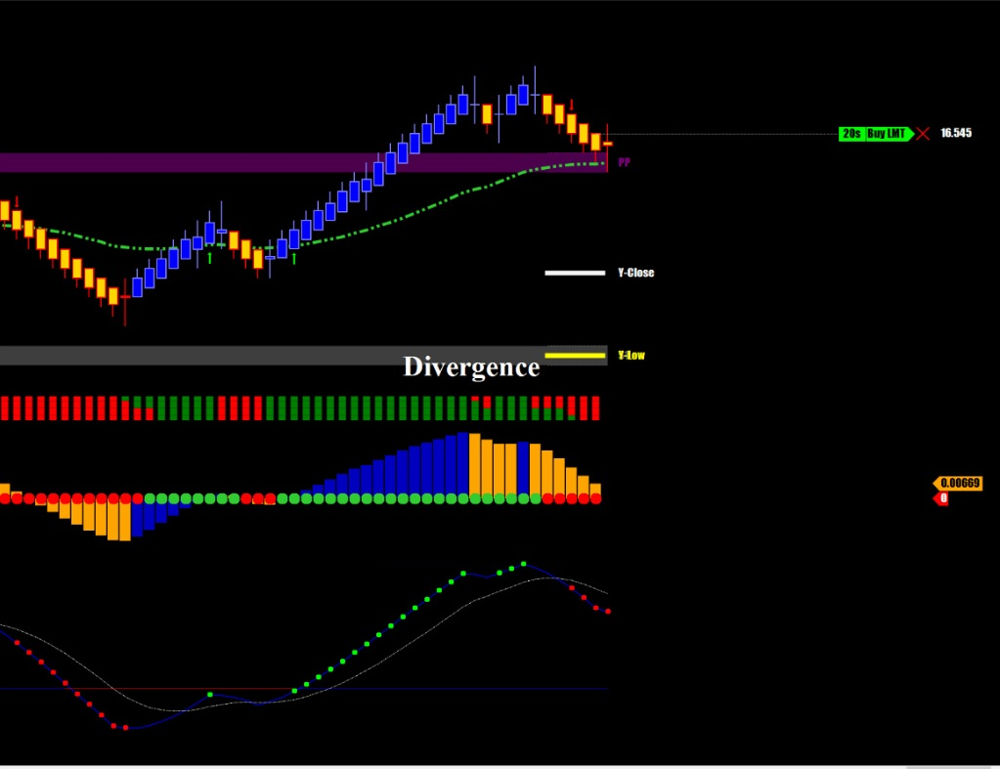
무려 3틱 위에서 계약체결..쩝
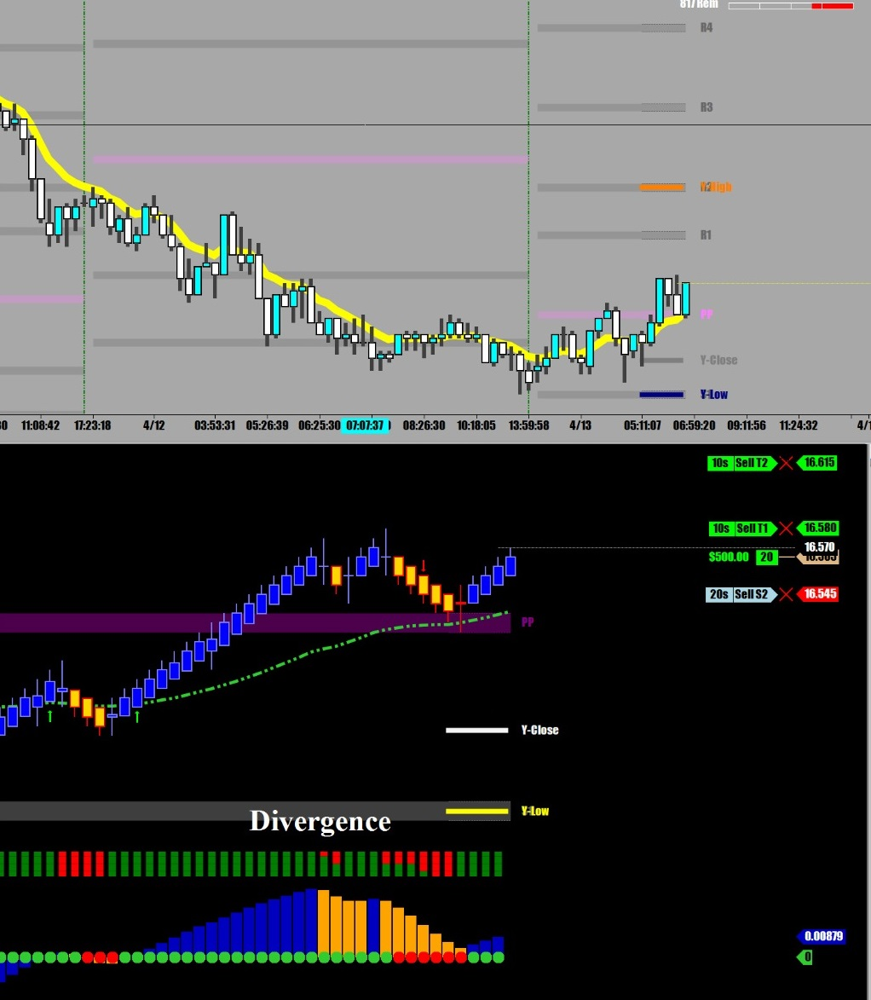
힘을 내라 힘을 !!!
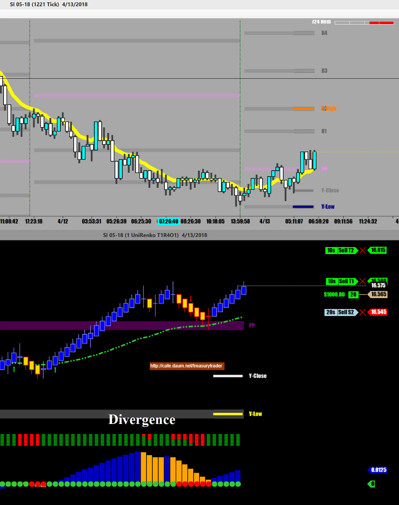
1차 목표 달성, 절반 매도 후 손절을 땡겨올림
실버가 매매하기 좋은 이유는
한쪽 방향으로 진행할 때 아래 위로 요동질을 크게 하지 않으면서 꾸준히 간다는 것
다른 선물들처럼 이왕에 갈거면서 자꾸 뒤로 심하게 빼면서 가면 손절에 걸려버림
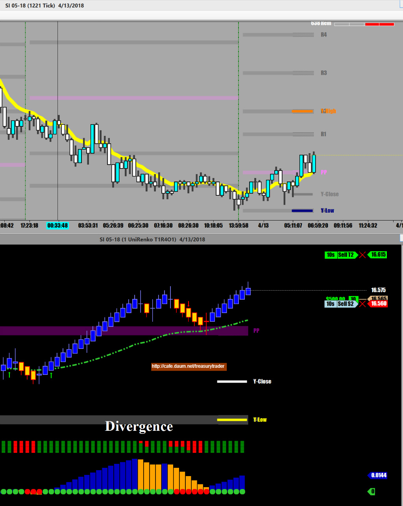
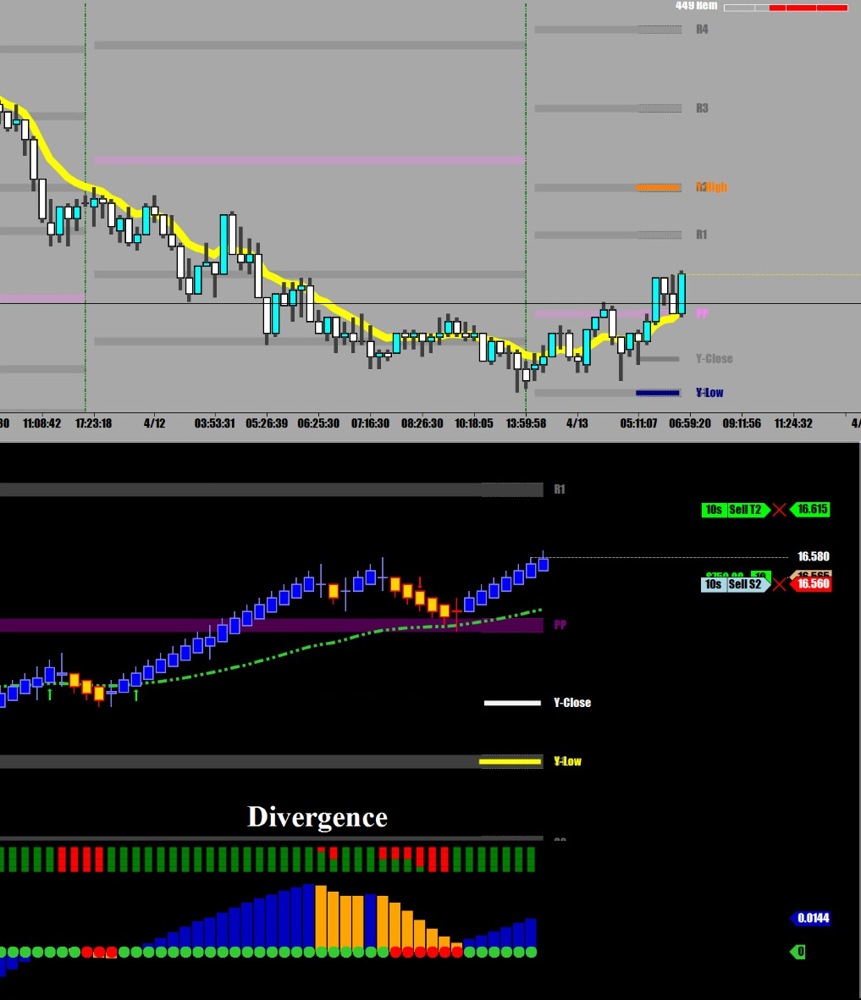
현재 증시가 장중고점에서 급하락중..상승할 확률 높아짐
Precious Metal은 국채선물처럼 증시와 반대로 가는 경우가 많음
가즈아 !!!!
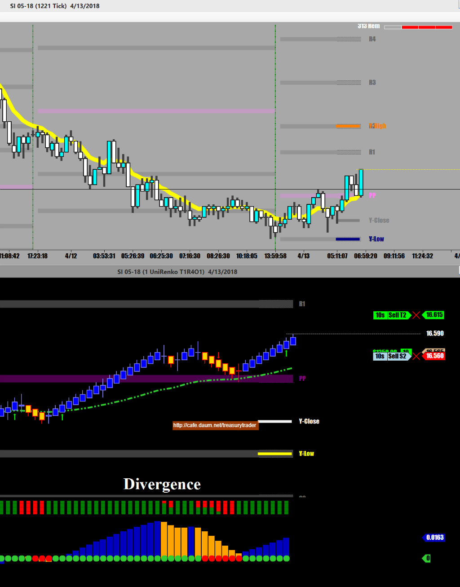
손절 따라 올리고 !!
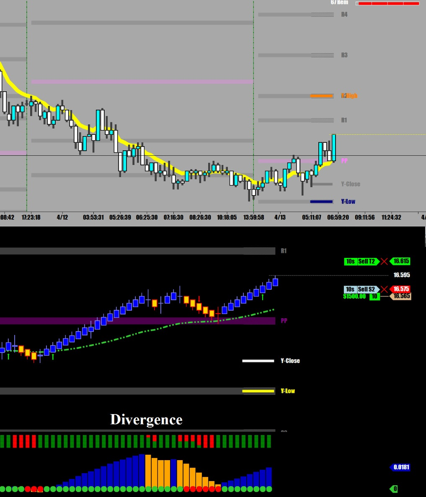
따라붙는 손절 포인트는 직전캔들 아래끝에...
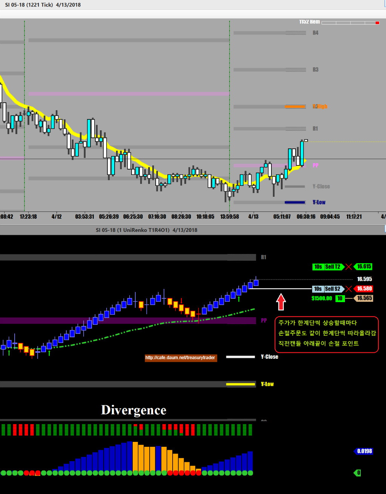
Almost !!!
come on !!!
come to papa.
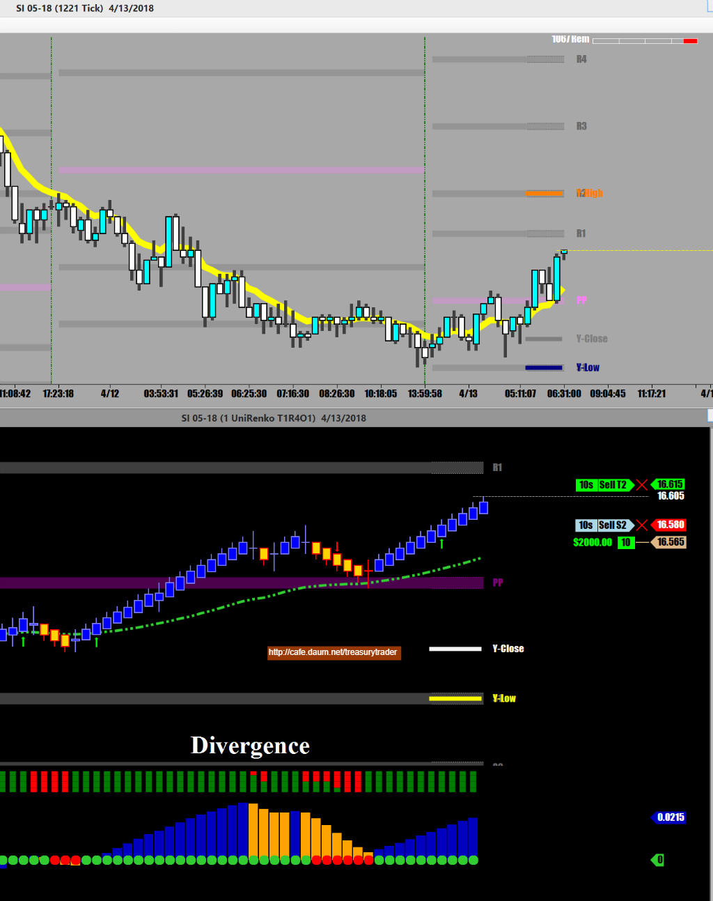
Touch Down !!!
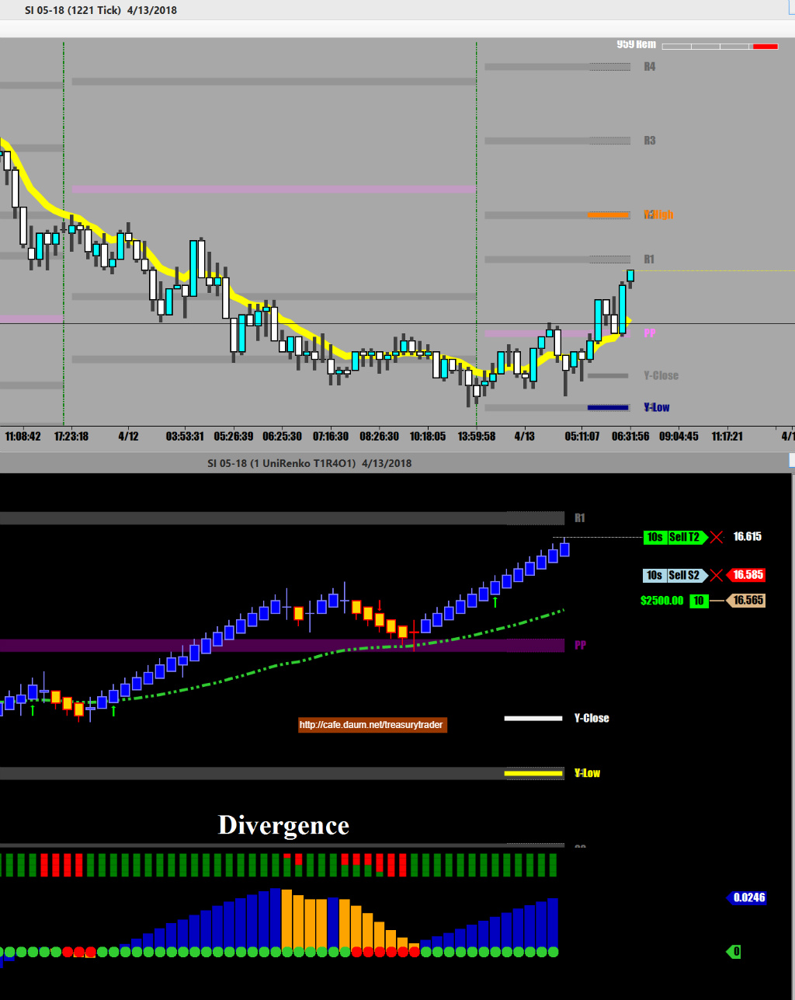
매매기법상 랜딩 포인트는 당연히 피봇 저항선이지만
거기에는 엄청난 매도 주문이 몰려있어서
언제나 거기보다 한틱 아래에서 매도.
선물 매매하는 사람들은 누구나 피봇 지지(저항)에서 털기 때문에
소문난 맛집처럼 항상 줄이 엄청나게 길게 서있음..(반드시 그 지점은 피할 것)
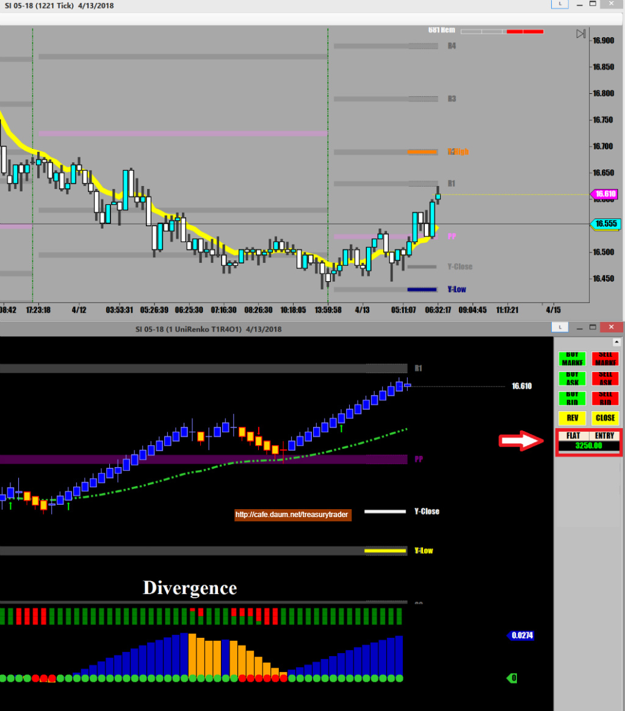
이제 Silver는 끝내고 구리선물로 다시 붙을 예정임